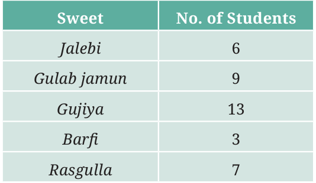
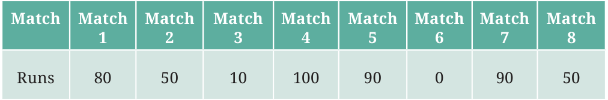
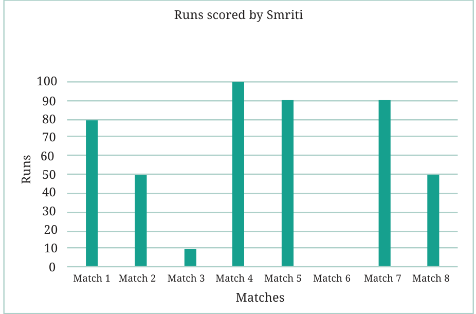
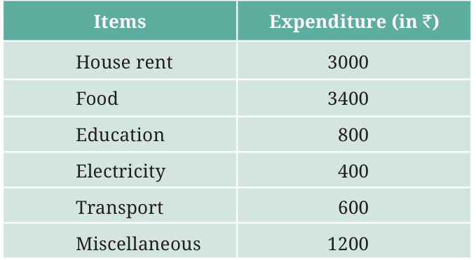
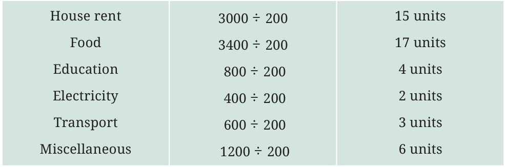
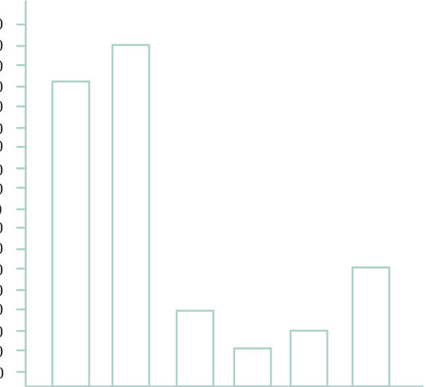

In a previous example, Shri Nilesh prepared a frequency table representing the sweet preferences of the students in his class. Let’s try to prepare a bar graph to present his data -
- First, we draw a horizontal line and a vertical line. On the horizontal line, we will write the name of each of the sweets, equally spaced, from which the bars will rise in accordance with their frequencies; and on the vertical line we will write the frequencies representing the number of students.

- We must choose a scale. That means we must decide how many students will be represented by a unit length of a bar so that it fits nicely on our paper. Here, we will take 1 unit length to represent 1 student.
- For jalebi, we therefore need to draw a bar having a height of 6 units (which is the frequency of the sweet jalebi), and similarly for the other sweets we have to draw bars as high as their frequencies.
- We, therefore, get a bar graph as shown below - Sweet preferences of students 14 13 12 11 10 9 8 7 6 5 4 3 2 1 0 Jalebi Gulab jamun Gujia Barfi Rasgulla
When the frequencies are larger and we cannot use the scale of 1 unit length \(= 1\) number (frequency), we need to choose a different scale like we did in the case of pictographs.
Example: The number of runs scored by Smriti in each of the 8 matches are given in the table below:

In this example, the minimum score is 0 and the maximum score is 100. Using a scale of 1 unit length \(= l\) run would mean that we have to go all the way from 0 to 100 runs in steps of l. This would be unnecessarily tedious. Instead, let us use a scale where 1 unit length \(= 10\) runs. We mark this scale on the vertical line and draw the bars according to the scores in each match. We get the following bar graph representing the above data.

Example: The following table shows the monthly expenditure of Imran’s family on various items:

To represent this data in the form of a bar graph, here are the steps - •• Draw two perpendicular lines, one horizontal and one vertical. •• Along the horizontal line, mark the ‘items’ with equal spacing between them and mark the corresponding expenditures along the vertical line.
•• Take bars of the same width, keeping a uniform gap between them. •• Choose a suitable scale along the vertical line. Let, 1 unit length = ₹200, and then mark and write the corresponding values (₹200, ₹400, etc.) representing each unit length. Finally, calculate the heights of the bars for various items as shown below -

Here is the bar graph that we obtain based on the above steps:

3600 3400 3200 3000 2800 2600 2400 2200 2000 1800 1600 1400 1200 1000
Use the bar graph to answer the following questions:
- On which item does Imran’s family spend the most and the second most?
- Is the cost of electricity about one-half the cost of education?
- Is the cost of education less than one-fourth the cost of food?